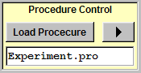

|
Let's consider one LTP experiment. The following are the aims of this experiment.
Ephic can do this for you. |
|
| First, you need to save the settings of each individual protocol to a ".set" file. For example, you will need "Vm.set", "Rin.set", "Chirp.set", "AP.set", "ADP.set", "EPSP.set", "CalciumImaging.set", and "TBP.set". | |
Next, create
three text files like the following. The commands are explained at the end of
this page.
// Monitor.pro AdjustVm -65 // Adjust Vm to -65 mV Run Rs.set 5 1 // 5 sec, once Run Vm.set 5 1 // 5 sec, once Run Rin.set 5 1 // 5 sec, once Run Chirp.set 15 1 // 15 sec, once Run AP.set 10 1 // 10 sec, once Run ADP.set 10 1 // 10 sec, once Run EPSP.set 10 1 // 10 sec, once // TBP.pro AdjustVm -65 // Adjust Vm to -65 mV Run TBP.set 20 1 // Run TBP every 20 seconds, once
// Experiment.pro
Exe Monitor.pro 60 10 // Repeat Monitor.pro every 60 seconds,
// 10 times (totally 10 minutes).
Run CalciumImaging.set 60 1 // 60 sec, once.
Exe TBP.pro 20 3 // Execute TBP.pro every 20 sec, 3 times.
Exe Monitor.pro 60 30 // Repeat Monitor.pro every 60 seconds,
// 30 times.
Run CalciumImaging.set 60 1 // 60 sec, once.
|
|
|
Click "Load Procedure" button and load "Experiment.pro" by following the
instructions. Click the triangle button and Ephic will start the procedure. To stop the procedure, click the triangle button again. After finishing the procedure, Ephic will pop up the triangle button to indicate that the procedure is done. |
 |
| Command | Description | Notes | Example | Explanation |
| // | Comment. | Characters following // are ignored. | // From here to the end of the line is ignored. | |
| Set Amp Current | Set amplitude. | In current clamp mode, it sets the amplitude of injected current in nA. | Set Amp 0.5 | This sets injected current to 0.5 nA. |
| Load SetFileName | Load saved settings. | SetFileName is the SET file in "/EphicFiles" folder. | Load Vm.set | Loads "/EphicFiles/Vm.set". |
| Wait Period | Wait a certain time in seconds. | Period is the time in seconds. | Wait 10 | Waits 10 seconds without doing anything. |
| ResetInjectedI | Reset continuous injected current to 0. | "/EphicFiles/AdjustVm.set" is required | ResetInjectedI | Reset holding current. |
| AdjustVm Voltage | Sets membrane potential to Voltage in mV. | "/EphicFiles/AdjustVm.set" is required. | AdjustVm -70 | Adjusts membrane potential to -70 mV. |
| Acq Interval Repetition | Does data acquisition. | Interval: interval between acquisitions in seconds. Repetition: number of repetitions. | Acq 10 3 | Does data acquisition every 10 seconds, 3 times. |
| Run SetFileName Interval Repetition | Runs saved settings in SetFileName. | Repeats Repetition times with Interval second interval. | Run TBF.set 10 3 | Loads TBF.set and runs three times with 10 second interval. |
| Exe ProFileName Interval Repetition | Loads saved procedures in ProFileName. | Repeats Repetition times with Interval second interval. | Exe 1min.pro 60 3 | Loads 1min.pro and executes three times with 60 second interval. |